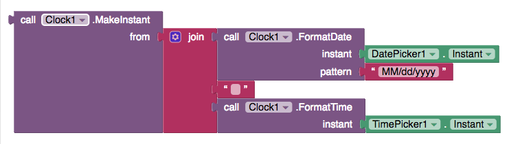

Sensor Components - App Inventor for Android
Table of Contents
- AccelerometerSensor
- BarcodeScanner
- Clock
- GyroscopeSensor
- LocationSensor
- NearField
- OrientationSensor
- Pedometer
- ProximitySensor
AccelerometerSensor
Non-visible component that can detect shaking and measure acceleration approximately in three dimensions using SI units (m/s2). The components are:
- xAccel: 0 when the phone is at rest on a flat surface, positive when the phone is tilted to the right (i.e., its left side is raised), and negative when the phone is tilted to the left (i.e., its right size is raised).
- yAccel: 0 when the phone is at rest on a flat surface, positive when its bottom is raised, and negative when its top is raised.
- zAccel: Equal to -9.8 (earth's gravity in meters per second per second when the device is at rest parallel to the ground with the display facing up, 0 when perpendicular to the ground, and +9.8 when facing down. The value can also be affected by accelerating it with or against gravity.
Properties
AvailableEnabledLegacyMode(designer only)- Prior to the release that added this property the AccelerometerSensor component passed through sensor values directly as received from the Android system. However these values do not compensate for tablets that default to Landscape mode, requiring the MIT App Inventor programmer to compensate. However compensating would result in incorrect results in Portrait mode devices such as phones. We now detect Landscape mode tablets and perform the compensation. However if your project is already compensating for the change, you will now get incorrect results. Although our preferred solution is for you to update your project, you can also just set this property to “true” and our compensation code will be deactivated. Note: We recommend that you update your project as we may remove this property in a future release.
MinimumInterval- The minimum interval, in milliseconds, between phone shakes
Sensitivity- A number that encodes how sensitive the accelerometer is. The choices are: 1 = weak, 2 = moderate, 3 = strong.
XAccelYAccelZAccel
Events
AccelerationChanged(number xAccel, number yAccel, number zAccel)- Indicates the acceleration changed in the X, Y, and/or Z dimensions.
Shaking()- Indicates the device started being shaken or continues to be shaken.
Methods
noneBarcodeScanner
Component for using the Barcode Scanner to read a barcode
Properties
Result- Text result of the previous scan.
UseExternalScanner- If true App Inventor will look for and use an external scanning program such as "Bar Code Scanner."
Events
AfterScan(text result)- Indicates that the scanner has read a (text) result and provides the result
Methods
DoScan()- Begins a barcode scan, using the camera. When the scan is complete, the AfterScan event will be raised.
Clock

Non-visible component that provides the instant in time using the internal clock on the phone. It can fire a timer at regularly set intervals and perform time calculations, manipulations, and conversions.
Operations on dates and times, such as from DatePicker and TimePicker, are accomplished through methods in Clock. Date and Time are represented as InstantInTime and Duration.
- Instant : consists of Year, Month, DayOfMonth, Hour, Minute, and Second. An instant can be created by using MakeInstant method.
- Duration : time in milliseconds elapsed between instants. Duration can be obtained by Duration method.
Instants are assumed to be in the device's local time zone. When they are converted to or from milliseconds, the milliseconds for a given Instance are calculated from January 1, 1970 in UTC (Greenwich Mean Time).
Methods to convert an Instant to text are also available. Acceptable patterns are empty string, MM/dd/YYYY HH:mm:ss a, or MMM d, yyyy HH:mm. The empty string will provide the default format, which is "MMM d, yyyy HH:mm:ss a" for FormatDateTime, "MMM d, yyyy" for FormatDate. To see all possible format, please see here.
A note on combining date and time: In order to combine the date from one Instant and the time from another, for example from a DatePicker and TimePicker, extract the parts as text and use the text to create a new Instant.
Example:
Properties
-
TimerAlwaysFires - Will fire even when application is not showing on the screen if true
-
TimerEnabled - Fires timer if true
-
TimerInterval - Interval between timer events in ms
Events
-
Timer() - Timer has gone off.
Methods
-
InstantInTime AddDays(InstantInTime instant, number days) - Returns an instant in time some days after the argument
-
InstantInTime AddDuration(InstantInTime instant, Duration duration) - Returns an instant in time some time after the argument. Duration can be obtained from Clock.Duration()
-
InstantInTime AddHours(InstantInTime instant, number hours) - Returns an instant in time some hours after the argument
-
InstantInTime AddMinutes(InstantInTime instant, number minutes) - Returns an instant in time some minutes after the argument
-
InstantInTime AddMonths(InstantInTime instant, number months) - Returns an instant in time some months after the argument
-
InstantInTime AddSeconds(InstantInTime instant, number seconds) - Returns an instant in time some seconds after the argument
-
InstantInTime AddWeeks(InstantInTime instant, number weeks) - Returns an instant in time some weeks after the argument
-
InstantInTime AddYears(InstantInTime instant, number years) - Returns an instant in time some years after the argument
-
number DayOfMonth(InstantInTime instant) - Returns the day of the month(1-31) from the instant
-
Duration Duration(InstantInTime start, InstantInTime end) - Returns duration, which is milliseconds elapsed between instants
-
number DurationToSeconds(Duration duration) - Converts the duration to the number of seconds.
-
number DurationToMinutes(Duration duration) - Converts the duration to the number of minutes.
-
number DurationToHours(Duration duration) - Converts the duration to the number of hours.
-
number DurationToDays(Duration duration) - Converts the duration to the number of days.
-
number DurationToWeeks(Duration duration) - Converts the duration to the number of weeks.
-
text FormatDate(InstantInTime instant, text pattern) - Returns text representing the date of an instant in the specified pattern
-
text FormatDateTime(InstantInTime instant, text pattern) - Returns text representing the date and time of an instant in the specified pattern
-
text FormatTime(InstantInTime instant) - Return text representing the time of an instant in the device's local time zone.
-
number GetMillis(InstantInTime instant) - Returns the instant in time measured as milliseconds since 1970 in UTC (Greenwich Mean Time).
-
number Hour(InstantInTime instant) - Returns the hour of the day(0-23) from the instant
-
InstantInTime MakeInstant(text from) - Returns an instant specified by MM/dd/YYYY hh:mm:ss or MM/dd/YYYY or hh:mm. An example text input is "06/22/2015 12:18"
-
InstantInTime MakeDate(number year, number month, number day) - Returns an instant in time specified by year, month, date in UTC.
-
InstantInTime MakeTime(number hour, number minute, number second) - Returns an instant in time specified by hour, minute, second in UTC.
-
InstantInTime MakeInstantFromParts(number year, number month, number day, number hour, number minute, number second) - Returns an instant in time specified by year, month, date, hour, minute, second in UTC.
-
InstantInTime MakeInstantFromMillis(number millis) - Returns an instant in time specified by the milliseconds since 1970 in UTC.
-
number Minute(InstantInTime instant) - Returns the minute of the hour (0-59) from the instant
-
number Month(InstantInTime instant) - Returns the month of the year (1-12) from the instant
-
text MonthName(InstantInTime instant) - Returns the name of the month from the instant E.g. January, February, March...
-
InstantInTime Now() - Returns an instant of the current time read from phone's clock
-
number Second(InstantInTime instant) - Returns the second of the minute (0-59) from the instant
-
number SystemTime() - Returns the phone's internal time
-
number Weekday(InstantInTime instant) - Returns the day of the week represented as a number from 1 (Sunday) to 7 (Saturday)
-
text WeekdayName(InstantInTime instant) - Returns the name of the day of the week from the instant
-
number Year(InstantInTime instant) - Returns the year from the instant
GyroscopeSensor
Non-visible component that can measure angular velocity in three dimensions in units of degrees per second.
In order to function, the component must have its Enabled property set to True, and the device must have a gyroscope sensor.
Properties
Available- Indicates whether a gyroscope sensor is available.
Enabled- If enabled, then sensor events will be generated and
XAngularVelocity,YAngularVelocity, andZAngularVelocityproperties will have meaningful values. XAngularVelocity- The angular velocity around the X axis, in degrees per second.
YAngularVelocity- The angular velocity around the Y axis, in degrees per second.
ZAngularVelocity- The angular velocity around the Z axis, in degrees per second.
Events
GyroscopeChanged(number xAngularVelocity, number yAngularVelocity, number zAngularVelocity, number timestamp)- Indicates that the gyroscope sensor data has changed. The
timestampparameter is the time in nanoseconds at which the event occurred.
Methods
none
LocationSensor
Non-visible component providing location information, including longitude, latitude, altitude (if supported by the device), speed (if supported by the device), and address. This can also perform "geocoding", converting a given address (not necessarily the current one) to a latitude (with the LatitudeFromAddress method) and a longitude (with the LongitudeFromAddress method).
In order to function, the component must have its Enabled property set to True, and the device must have location sensing enabled through wireless networks or GPS satellites (if outdoors).
Location information might not be immediately available when an app starts. You'll have to wait a short time for a location provider to be found and used, or wait for the OnLocationChanged event
The emulator does not emulate sensors on all devices. Code should be tested on a physical device.
Properties
AccuracyThe LocationSensor will be able to locate the device with a varying degree of confidence, based on the quality of satellite, cell towers, and other data used to estimate location. The Accuracy value is the radius in meters around the sensor's detected location. The device has a 68% chance to be located within this radius. More precise location detection will result in a smaller accuracy number, which allows the app to have more confidence where the device is actually located.
If the accuracy is not known, the return value is 0.0
AltitudeAltitude of the Android device in meters, if available.
Altitude is measured from the World Geodetic System 84 reference ellipsoid, not sea level.
Note that it is difficult for devices to accurately sense altitude. Altitude reported on a phone/tablet can easily be off by 30 meters or more.
AvailableProviders- List of available service providers, such as gps or network. This information is provided as a list and in text form.
CurrentAddressPhysical street address of the Android device from Google's map database.
The address might not always be available from the provider, and the address reported may not always be of the building where the device is located.
If Google has no address information available for a particular location, this will return No address available.
DistanceIntervalDetermines the minimum distance interval, in meters, that the sensor will try to use for sending out location updates. For example, if this is set to 50, then the sensor will fire a LocationChanged event only after 50 meters have been traversed. However, the sensor does not guarantee that an update will be received at exactly the distance interval. It may take more than 5 meters to fire an event, for instance.
It is also useful to check against Accuracy when using this property. When your device is moving, the accuracy of the detected location is constantly changing.
Enabled- If true, the LocationSensor will attempt to read location information from GPS, WiFi location, or other means available on the device. This setting does not control whether location information is actually available. Device location must be enabled or disabled in the device settings.
HasAccuracy- If true, Android device can report its accuracy level.
HasAltitude- If true, Android device can report its altitude.
HasLongitudeLatitude- If true, Android device can report longitude and latitude.
Latitude- Android device latitude. This is reported in decimal degrees to five decimal places. Latitude is a value between 90 (north) and -90 (south), where 0 marks the Equator.
Longitude- Android device longitude. This is reported in decimal degrees to five decimal places. Longitude is a value between 180 (east) and -180 (west), where 0 marks the Prime Meridian.
ProviderLockedThe device will not change the service provider.
It is possible for a device to switch service providers when the current provider is unable to provide adequate location information. ProviderLocked is a Boolean value: true/false. Set to true to prevent providers from changing. Set to false to allow for automatic switching when necessary.
ProviderName- The current service provider. The provider will most likely be either GPS or network.
TimeIntervalDetermines the minimum time interval, in milliseconds, that the sensor will try to use for sending out location updates. However, location updates will only be received when the location of the phone actually changes, and use of the specified time interval is not guaranteed. For example, if 30000 is used as the time interval, location updates will never be fired sooner than 30000ms, but they may be fired anytime after.
Values smaller than 30000ms (30 seconds) are not practical for most devices. Small values may drain battery and overwork the GPS.
Events
LocationChanged(number latitude, number longitude, number altitude, number speed)- Indicates that a new location has been detected. Speed is reported in meters/second. Other values match their properties.
StatusChanged(text provider, text status)- Indicates that the status of the location provider service has changed, such as when a provider is lost or a new provider starts being used.
Methods
number LatitudeFromAddress(text locationName)- Derives latitude of given address
number LongitudeFromAddress(text locationName)- Derives longitude of given address
NearField
Non-visible component to provide NFC capabilities. For now this component supports the reading and writing of text tags only (if supported by the device)
In order to read and write text tags, the component must
have its ReadMode property set to True or False
respectively.
Note: This component will only work on Screen1 of any App Inventor app.
Properties
LastMessageReadModeTextToWriteWriteType
Events
TagRead(text message)- Indicates that a new tag has been detected. Currently this is only a plain text tag, as specified in the manifest. See Compiler.java.
TagWritten()- Event for TagWritten
Methods
noneOrientationSensor

Use an orientation sensor component to determine the phone's spatial orientation.
An orientation sensor is a non-visible component that reports the following three values, in degrees:
- Roll : 0 degree when the device is level, increasing to 90 degrees as the device is tilted up onto its left side, and decreasing to −90 degrees when the device is tilted up onto its right side.
- Pitch : 0 degree when the device is level, increasing to 90 degrees as the device is tilted so its top is pointing down, then decreasing to 0 degree as it gets turned over. Similarly, as the device is tilted so its bottom points down, pitch decreases to −90 degrees, then increases to 0 degree as it gets turned all the way over.
- Azimuth : 0 degree when the top of the device is pointing north, 90 degrees when it is pointing east, 180 degrees when it is pointing south, 270 degrees when it is pointing west, etc.
Properties
-
Available - Indicates whether the orientation sensor is present on the Android device.
-
Enabled - If set, the orientation sensor is enabled.
-
Azimuth - Returns the azimuth angle of the device.
-
Pitch - Returns the pitch angle of the device.
-
Roll - Returns the roll angle of the device.
-
Magnitude - Returns a number between 0 and 1 that indicates how much the device is tilted. It gives the magnitude of the force that would be felt by a ball rolling on the surface of the device.
-
Angle - Returns an angle that tells the direction in which the device is tiled. That is, it tells the direction of the force that would be felt by a ball rolling on the surface of the device.
Events
-
OrientationChanged(number azimuth, number pitch, number roll) - Called when the orientation has changed.
Pedometer
A Component that acts like a Pedometer. It senses motion via the Accerleromter and attempts to determine if a step has been taken. Using a configurable stride length, it can estimate the distance traveled as well.
Properties
Distance- The approximate distance traveled in meters.
ElapsedTime- Time elapsed in milliseconds since the pedometer was started.
SimpleSteps- The number of simple steps taken since the pedometer has started.
StopDetectionTimeout- The duration in milliseconds of idleness (no steps detected) after which to go into a "stopped" state
StrideLength- Set the average stride length in meters.
WalkSteps- the number of walk steps taken since the pedometer has started.
Events
SimpleStep(number simpleSteps, number distance)- This event is run when a raw step is detected
WalkStep(number walkSteps, number distance)- This event is run when a walking step is detected. A walking step is a step that appears to be involved in forward motion.
Methods
Pause()- Pause counting of steps and distance.
Reset()- Resets the step counter, distance measure and time running.
Resume()- Resumes counting, synonym of Start.
Save()- Saves the pedometer state to the phone. Permits permits accumulation of steps and distance between invocations of an App that uses the pedometer. Different Apps will have their own saved state.
Start()- Start counting steps
Stop()- Stop counting steps
ProximitySensor
A sensor component that can measure the proximity of an object (in cm) relative to the view screen of a device. This sensor is typically used to determine whether a handset is being held up to a persons ear; i.e. lets you determine how far away an object is from a device. Many devices return the absolute distance, in cm, but some return only near and far values. In this case, the sensor usually reports its maximum range value in the far state and a lesser value in the near state. It reports the following value:
- Distance: The distance from the object to the device
Properties
-
Available - Reports whether or not the device has a proximity sensor
-
Enabled - If enabled, then device will listen for changes in proximity
-
KeepRunningWhenOnPause - If set to true, it will keep sensing for proximity changes even when the app is not visible
-
Distance - Returns the distance from the object to the device
-
MaximumRange - Reports the Maximum Range of the device's ProximitySensor.
Events
-
ProximityChanged(number distance) - Called when distance (in cm) of the object to the device changes.

This work is licensed under a Creative Commons Attribution-ShareAlike 3.0
Unported License
© 2012-2013 Massachusetts Institute of Technology